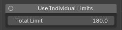
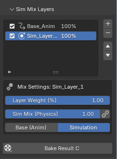

Welcome to the Wiggle 2: RTX Edition Wiki
- "The Most Versatile Physics Solution for Rigs of All Kinds.
- "While optimized for high-density hair, Wiggle 2: RTX Edition is a universal physics engine designed for any bone-based setup.
- From complex character tails and dynamic clothing to subtle accessory vibrations, it brings lifelike, procedural movement to every part of your rig.
- Wiggle 2: RTX Edition is a professional physics solution engineered to bring dynamic,
- lifelike movement to massive hair setups. Optimized for high-end character production,
- it serves as a critical pillar in the modern grooming pipeline, especially when paired with GroomForge PRO.
✨ Why RTX Edition?
Experience next-level features that go far beyond the standard Wiggle 2. The RTX Edition is built for professional stability and complex multi-layered setups.
- Universal Bone Physics: Not just for hair. Optimized for Tails, Clothing, Capes, and any bone-based rig requiring organic secondary motion.
- Modern API Support: Fully compatible with Blender 4.2 LTS, 5.0, and 5.1+ environments.
- Layered Physics System: A revolutionary system allowing independent physics control for different rig sections (layers) within a single armature.
- Advanced Keyframe & Sim Baking: High-fidelity conversion of simulation data into animation keyframes, ensuring 100% match between Blender and Game Engines.
- High-Density Optimization: Delivers smooth, lag-free viewport performance even with complex rigs involving tens of thousands of bones.
🚀 Key Synergy: The Master's Workflow
The ultimate character production pipeline is achieved through the seamless integration of these two powerful tools:
- GroomForge PRO: The industry's most advanced tool for precision creation, UV packing, and Groom Exporting for Unreal Engine 5.
- Wiggle 2 RTX: Adds the final layer of life. It applies high-speed layered physics to GroomForge-generated rigs and provides seamless baking, optimized specifically for UE5 MetaHuman pipelines.
Together, they form a "Zero-Waste" ecosystem—from initial strand creation to the final physics-baked export.
📖 User Guide: Wiggle 2 Physics v2.1.9
Step 1: Initializing your Physics Stack
To begin using Wiggle 2 RTX, you must first define your animation and simulation layers. The system will not calculate physics until these layers are initialized.
Critical Prerequisite: Push Down Action
Tip
Before adding layers, your base animation must be pushed down into the NLA (Non-Linear Animation) stack. Requirement: The system identifies the "Base_Anim" layer by looking at the pushed-down action strips in the NLA Editor. How-to: Select your armature > Go to the NLA Editor > Click the 'Push Down' button on your active action.

Layer Setup
- Add Base Layer: Click the + button to add your Base_Anim layer.
- Add Sim Layer: Add one or more Sim_Layers where the RTX physics engine lives.
🛠️ Step 2: Stability and Safety Guards
1) Use Individual Limits

- Toggle: Switches between per-bone individual limits and global settings.
- Total Limit: Sets the maximum allowed rotation. Higher values allow larger motion; lower values (e.g., 30-60°) prevent mesh clipping.
🚀 Step 3: Sim Mix Layers Unified Workflow
This core feature handles keyframes (animation) and simulation (physics) as a single unified data flow.

- Bake Result C (Composite Bake): Merges keyframes and simulation into a single keyframe track while preserving the exact layer mix weights.
- Non-destructive workflow: Keeps
Base_Animuntouched while cleanly extracting only the simulated result. - Game-engine friendly: Flattens the animation so Unity/Unreal playback matches the Blender viewport 100%.
🛡️ Step 4: Wiggle Safety Guard (Adaptive Safety)

A "safety net" that prevents uncontrolled behavior such as explosions or infinite jitter during simulation. 1. Adaptive Safety: Detects abnormal velocity / excessive energy buildup and applies real-time damping to stabilize. 2. Sensitivity (e.g., 5.00): Higher values react more aggressively to small vibrations. 3. Note: This feature is currently closer to an experimental stage. If motion becomes too stiff, turn it off or lower Sensitivity.
⚙️ Step 5: Tail Settings (RTX Optimization Core)

The most frequently used core settings area, with many stability improvements in v2.1.9. 1. Physics parameters: Improved Mass/Gravity issues and more accurate Stretch recovery behavior. 2. Wind: More precise, coherent responses across multiple bones. 3. Collisions (notable improvements): Stronger sub-stepping to reduce pass-through and pinching. Smoother stabilization for jittering related to Radius / Friction / Sticky. 4. Chain: Added energy decay logic to reduce “tip energy buildup” explosions.
⚡ Step 6: Global Utilities
Quick Presets (One-click Presets)
Applies optimized baseline values for common scenarios: Jelly / Hair / Heavy / Cloth / Spring / Antenna. * Tip: Apply a preset first, then fine-tune in Tail Settings.
Collision Guide Options
- Collision Shape: Box / Cylinder / Capsule (recommended).
- Visual Guide: View collision volume as a viewport wireframe guide.
- Interaction: Adjust Radius / Friction / Bounce / Sticky.
- Collisions: Set targets by Object or Collection.
🔄 Step 7: Loop Physics and Final Bake

- Loop Physics: Smoothly connects physics state from last frame back to the first.
- Preroll: Stabilization frames before baking (typically 10~30 frames).
- Bake (with Auto-Off): Automatically turns off realtime physics after the bake completes.
- Overwrite Current / Current Action to...: Choose how the baked result is stored.
💡 Final Optimization Tip (The "Zero Waste" Rule) Use a 256px guide image in GroomForge PRO for optimized UV layouts to ensure Wiggle 2 RTX physics run faster and more stable.